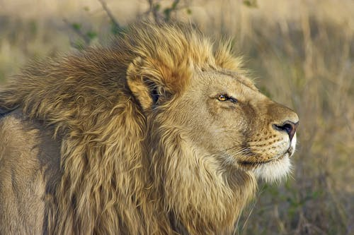
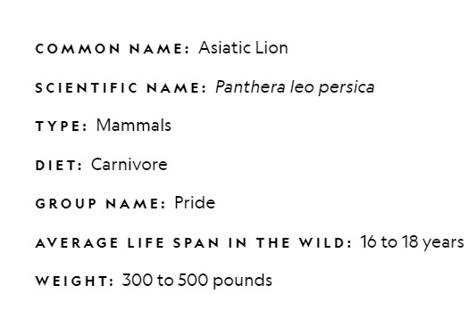
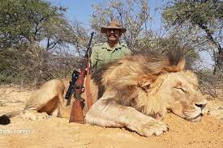

The Asiatic lion is a Panthera leo leo population surviving today only in India. Since the turn of the 20th century, its range is restricted to Gir National Park and the surrounding areas in the Indian state of Gujarat. Historically, it inhabited much of Western Asia and the Middle East to northern India. The first scientific description of the Asiatic lion was published in 1826 by the Austrian zoologist Johann N. Meyer, who named it Felis leo persicus. On the IUCN Red List, it is listed under its former scientific name Panthera leo persica as Endangered because of its small population size and area of occupancy. Until the 19th century, it occurred in Saudi Arabia, eastern Turkey, Iran, Mesopotamia, Pakistan, and from east of the Indus River to Bengal and the Narmada River in Central India.
The population has steadily increased since 2010. In May 2015, the 14th Asiatic Lion Census was conducted over an area of about 20,000 km2 (7,700 sq mi); the lion population was estimated at 523 individuals, comprising 109 adult males, 201 adult females and 213 cubs. In August 2017, surveyors counted 650 wild lions. In June 2020, an estimation exercise counted 674 Asiatic lions in the Gir forest region, an increase of 29% over the 2015 census figure.
These majestic animals primarily feed on wild buffalloes, antelopes, deers and wild boars. The females hunt for the whole pride while the male leader rests. After the hunting the leader of the pride is the first one to eat.
Asiatic lions, unlike their African counterparts, don't view humans as immediate threats. Researchers have observed that unless provoked, starving, or approached when with cubs or while mating (in which case they tend to be more aggressive than usual), they avoid humans.Due to this reason there is constant poaching of lions
Hunter with a carcass of lion